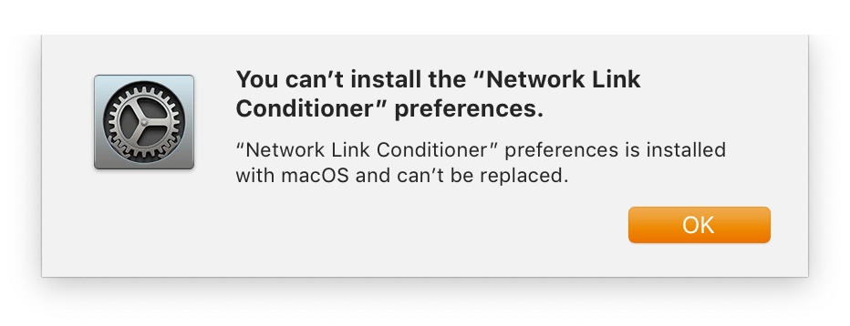

POSTS
Mac OS 限制网络速度
因为网络共享，看视频或下载的时候会占用大量带宽，导致网络卡顿，影响他人的使用。速度太快还会被网管断开连接(下载Xcode或更新时经常出现)。下面是搜索到的两种限制网速的方式。苹果官方提供了限制系统整体网速的Network Link Conditioner 和 OpenBSD’s Packet Filter 命令行工具。
方法1 使用Network Link Conditioner
通过Addtional Toos for Xcode中的Network Link Conditioner（网络链接调节器）实现网络速度控制。
安装步骤：
- 安装Xcode
安装Addtional Toos for Xcode ，下载地址https://developer.apple.com/download/more/?=for%20Xcode, 或者通过菜单Xcode -> Open Developer Tool -> More Developer Tools 打开浏览器后搜索Addtional Toos for Xcode下载

打开Additional_Tools_for_Xcode -> Hardware -> Network Link Conditioner.prefPane

首次安装Network Link Conditioner 后，使用正常。当关闭并再次打开 System Preferences，Network Link Conditioner配置面板将消失，尝试 重新安装时后出现错误: You can’t install thee “Network Link Conditioner” preferences.

解决方法是将用户PreferencePanes目录下的Network Link Conditioner.prefPane移动至系统配置目录。在命令行中输入如下命令：
sudo mv ~/Library/PreferencePanes/Network\ Link\ Conditioner.prefPane /Library/PreferencePanes/
再次打开System Preferences，Network Link Conditioner将正常展示。
使用
启用Network Link Conditioner会根据所选配置更改整个系统的网络环境，从而限制上行链路或下载带宽，延迟和数据包丢失率。
默认已经有了如下预设，可以直接选择使用：
- 100% Loss
- 3G
- DSL
- EDGE
- High Latency DNS
- LTE
- Very Bad Network
- WiFi
- WiFi 802.11ac

也可以自行设定：

启用后系统网络限制生效。
方法2 使用PF（OpenBSD’s Packet Filter）工具限制
保存以下脚本pf-bandwidth-limit.sh
#!/bin/bash
set -o errexit
set -o errtrace
set -o pipefail
set -o posix
#set -x
start_limit(){
local size_kbytes="$1"
# Reset dummynet to default config
dnctl -f flush
# Compose an addendum to the default config: creates a new anchor
(cat /etc/pf.conf && echo 'dummynet-anchor "my_anchor"' && echo 'anchor "my_anchor"') | pfctl -q -f -
# Configure the new anchor
cat <<EOF | pfctl -q -a my_anchor -f -
no dummynet quick on lo0 all
dummynet out proto tcp from any to any port 1:65535 pipe 1
EOF
# Create the dummynet queue
dnctl pipe 1 config bw ${size_kbytes}Kbit/s
# Activate PF
pfctl -E
# to check that dnctl is properly configured: sudo dnctl list
sudo dnctl list
}
stop_limit(){
sudo dnctl flush
sudo pfctl -f /etc/pf.conf
sudo dnctl list
}
main() {
local size_kbytes=$((512)) # 512K
case "$1" in
start)
start_limit "${size_kbytes}"
;;
stop)
stop_limit
;;
*)
echo "Usage: $0 <start|stop>"
;;
esac
}
main "$@"
使用：
sudo chmod a+x ./pf-bandwidth-limit.sh
#启动速率限制
sudo ./pf-bandwidth-limit.sh start
#停止速率限制
sudo ./pf-bandwidth-limit.sh stop
启动后输出如下内容，表示限速成功:
Flushed all pipes.
pfctl: Use of -f option, could result in flushing of rules
present in the main ruleset added by the system at startup.
See /etc/pf.conf for further details.
pfctl: Use of -f option, could result in flushing of rules
present in the main ruleset added by the system at startup.
See /etc/pf.conf for further details.
No ALTQ support in kernel
ALTQ related functions disabled
pf enabled
Token : 8914907148313668449
00001: 512.000 Kbit/s 0 ms 50 sl. 0 queues (1 buckets) droptail
mask: 0x00 0x00000000/0x0000 -> 0x00000000/0x0000
参考
- https://nshipster.com/network-link-conditioner/
- https://mop.koeln/blog/limiting-bandwidth-on-mac-os-x-yosemite/
- https://thesmithfam.org/blog/2012/04/11/throttling-your-network-connection-on-mac-os-x/